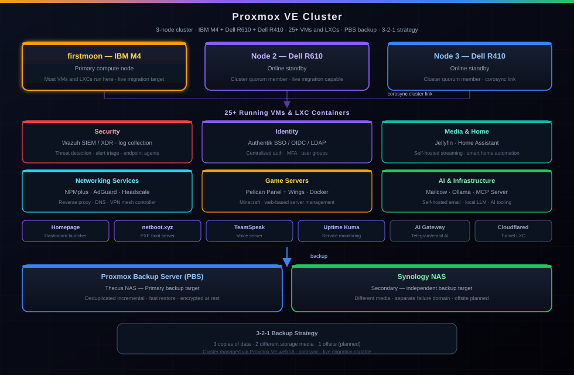

Rackmount + SFF Cluster
Three physical nodes — IBM M4, Dell R610, Dell R410 — give the cluster realistic failure domains and hardware diversity instead of relying on one desktop host.
Project | Infrastructure
Three-node Proxmox cluster — IBM M4, Dell R610, Dell R410 — running 25+ VMs and LXC containers across SIEM, identity, media automation, AI inference, home automation, game servers, email, remote support, and network tooling. Backed by a Proxmox Backup Server and Synology NAS.

Three physical nodes — IBM M4, Dell R610, Dell R410 — give the cluster realistic failure domains and hardware diversity instead of relying on one desktop host.
Proxmox Backup Server handles deduplicated incremental VM backups as the primary target. A Synology NAS provides a second copy. Media and config backups land on a separate Synology, keeping media storage and VM backups on independent hardware.
Security tools (Wazuh, Authentik), a self-hosted media stack (Jellyfin), self-hosted email (mailcow), AI inference (Ollama), home automation (Home Assistant), remote support (RustDesk), and game server infrastructure (Pelican) create realistic cross-service dependencies that mirror what a junior admin encounters in the field.
Three physical nodes, 25+ running services, and a backup strategy make the lab useful for practicing operational thinking. When something breaks, I have to identify what is down, what depends on it, and how to recover without disrupting another service.
Project pages that focus on specific services and security layers.
Three-node Proxmox cluster with Cisco and Netgear switching and Synology NAS storage.
View project ->Uptime Kuma runs on Proxmox LXC and monitors production services across the cluster.
View project ->Active security monitoring and log aggregation for endpoint behavior and compliance.
View project ->The switched backbone that uplinks all three Proxmox nodes across the 10-VLAN production fabric (VLANs 2–10, 20).
View project ->The VLAN 10 quorum recovery during the switch swap is documented here — full 10-VLAN migration and 30+ services moved.
View project ->